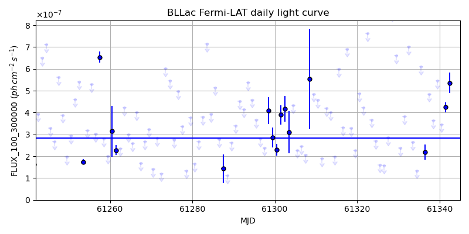
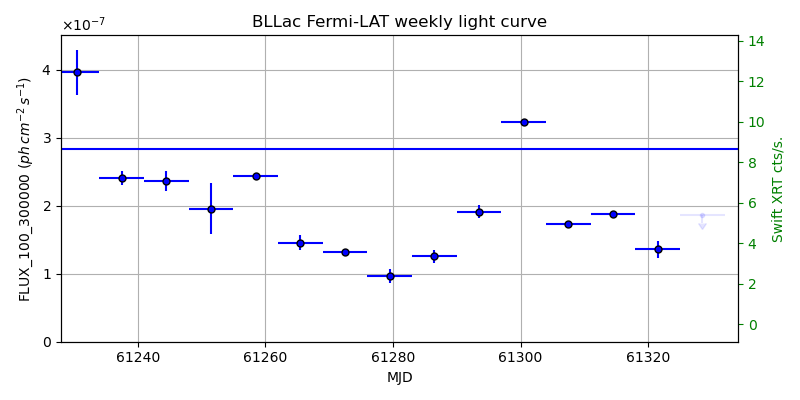
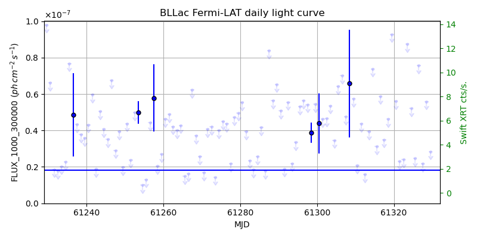
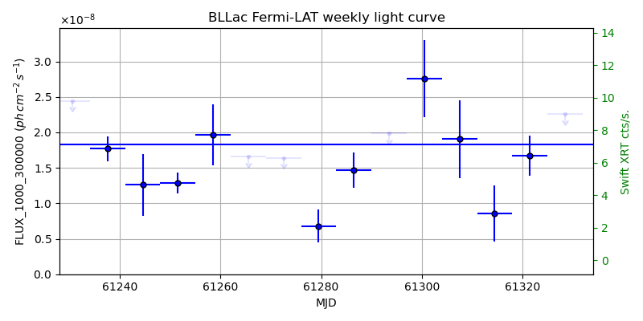

LAT Lightcurve site: https://fermi.gsfc.nasa.gov/ssc/data/access/lat/msl_lc/source/BL_Lac
Swift site: https://www.swift.psu.edu/monitoring/source.php?source=BLLacertae
NED: Query
Time of last update of this page: UT: 2026-10-24 15:28 (MJD: 61337.645)
| Property | Value |
|---|---|
| R.A. | 22:02:43.20 |
| Dec. | 42:16:40.8 |
| z | 0.067 |
| 3FGL SpectrumType | LogParabola |
| 3FGL PL Index | |
| 3FGL Flux_100_300000 | 2.84e-07 1 / (s cm2) |
| 3FGL Flux_1000_300000 | 1.83e-08 1 / (s cm2) |
| 3FGL Flux >200 GeV | 1.47e-11 1 / (s cm2) |
| 3FGL Extrap. Crab >200 GeV | 0.06 |
| 3FGL Flux After EBL Absorption >200GeV | 1.16e-11 1 / (s cm2) |
| 3FGL EBL Crab Fraction >200GeV | 0.05 |

| MJD | dMJD | Flux | dFlux | Frac3FGL | FracCrab>200GeV | EBLFracCrab>200GeV |
|---|---|---|---|---|---|---|
| 61332.50 | 0.50 | 7.01e-07 | 0.00e+00 | 0.00 | 0.00 | 0.00 |
| 61333.50 | 0.50 | 2.64e-07 | 0.00e+00 | 0.00 | 0.00 | 0.00 |
| 61334.50 | 0.50 | 1.34e-07 | 0.00e+00 | 0.00 | 0.00 | 0.00 |
| 61335.50 | 0.50 | 6.09e-07 | 0.00e+00 | 0.00 | 0.00 | 0.00 |
| 61336.50 | 0.50 | 2.18e-07 | 3.48e-08 | 0.77 | 0.05 | 0.04 |

| MJD | dMJD | Flux | dFlux | Frac3FGL | FracCrab>200GeV | EBLFracCrab>200GeV |
|---|---|---|---|---|---|---|
| 61300.50 | 3.50 | 3.23e-07 | 2.14e-09 | 1.14 | 0.07 | 0.06 |
| 61307.50 | 3.50 | 1.73e-07 | 2.58e-09 | 0.61 | 0.04 | 0.03 |
| 61314.50 | 3.50 | 1.88e-07 | 2.86e-09 | 0.66 | 0.04 | 0.03 |
| 61321.50 | 3.50 | 1.36e-07 | 1.24e-08 | 0.48 | 0.03 | 0.02 |
| 61328.50 | 3.50 | 1.87e-07 | 0.00e+00 | 0.00 | 0.00 | 0.00 |

| MJD | dMJD | Flux | dFlux | Frac3FGL | FracCrab>200GeV | EBLFracCrab>200GeV |
|---|---|---|---|---|---|---|
| 61332.50 | 0.50 | 8.53e-08 | 0.00e+00 | 0.00 | 0.00 | 0.00 |
| 61333.50 | 0.50 | 2.60e-08 | 0.00e+00 | 0.00 | 0.00 | 0.00 |
| 61334.50 | 0.50 | 5.79e-08 | 0.00e+00 | 0.00 | 0.00 | 0.00 |
| 61335.50 | 0.50 | 6.81e-08 | 0.00e+00 | 0.00 | 0.00 | 0.00 |
| 61336.50 | 0.50 | 9.18e-08 | 0.00e+00 | 0.00 | 0.00 | 0.00 |

| MJD | dMJD | Flux | dFlux | Frac3FGL | FracCrab>200GeV | EBLFracCrab>200GeV |
|---|---|---|---|---|---|---|
| 61300.50 | 3.50 | 2.76e-08 | 5.41e-09 | 1.51 | 0.09 | 0.07 |
| 61307.50 | 3.50 | 1.90e-08 | 5.50e-09 | 1.04 | 0.06 | 0.05 |
| 61314.50 | 3.50 | 8.56e-09 | 3.99e-09 | 0.47 | 0.03 | 0.02 |
| 61321.50 | 3.50 | 1.67e-08 | 2.83e-09 | 0.92 | 0.06 | 0.05 |
| 61328.50 | 3.50 | 2.26e-08 | 0.00e+00 | 0.00 | 0.00 | 0.00 |
--------------------------------------------------------- Using user-supplied coords: 22:02:43.20 42:16:40.8 2000 --------------------------------------------------------- FLWO UT night of: 2026-10-25 Local Sid. @ Midnight: 01:50 Sunset (-15.0) (local, UT): 18:49 01:49 Sunrise (-15.0) (local, UT): 05:27 12:27 Moonrise (local, UT): Moonset (local, UT): Moon phase: 0.99 --------------------------------------------------------- AzTime LSID UT Obj_el Obj_az Mn_el Mn_az Sep. --------------------------------------------------------- 18:49 20:39 01:49 70.1 51.4 26.2 94.5 50.4 19:19 21:09 02:19 74.8 41.4 32.4 98.6 50.4 19:49 21:39 02:49 78.2 22.6 38.6 103.2 50.5 20:19 22:09 03:19 79.2 354.4 44.7 108.4 50.5 20:49 22:39 03:49 77.1 329.0 50.6 114.6 50.5 21:19 23:09 04:19 73.1 314.0 56.2 122.3 50.5 21:49 23:39 04:49 68.2 306.2 61.2 132.2 50.5 22:19 00:09 05:19 62.9 302.2 65.5 145.3 50.5 22:49 00:39 05:49 57.4 300.4 68.4 162.2 50.6 23:19 01:10 06:19 51.8 299.8 69.4 182.2 50.6 23:49 01:40 06:49 46.3 300.1 68.2 202.0 50.6 00:19 02:10 07:19 40.8 301.0 65.1 218.6 50.6 00:49 02:40 07:49 35.3 302.3 60.8 231.3 50.6 01:19 03:10 08:19 30.0 304.0 55.7 240.9 50.7 01:49 03:40 08:49 24.8 306.0 50.1 248.5 50.7 02:19 04:10 09:19 19.7 308.4 44.3 254.6 50.8 02:49 04:40 09:49 14.8 311.1 38.2 259.8 50.8 03:19 05:10 10:19 10.1 314.1 32.1 264.4 50.9 03:49 05:40 10:49 5.7 317.4 26.0 268.5 51.0 04:19 06:10 11:19 1.7 321.1 19.9 272.4 51.0 04:49 06:40 11:49 -1.5 325.1 13.8 276.2 51.1 05:19 07:11 12:19 -5.8 329.5 7.8 279.9 51.2 05:27 07:18 12:27 -6.7 330.6 6.2 280.9 51.3 --------------------------------------------------------- Moon up all night, no dark time. Dark hours >55 deg.: 0.00